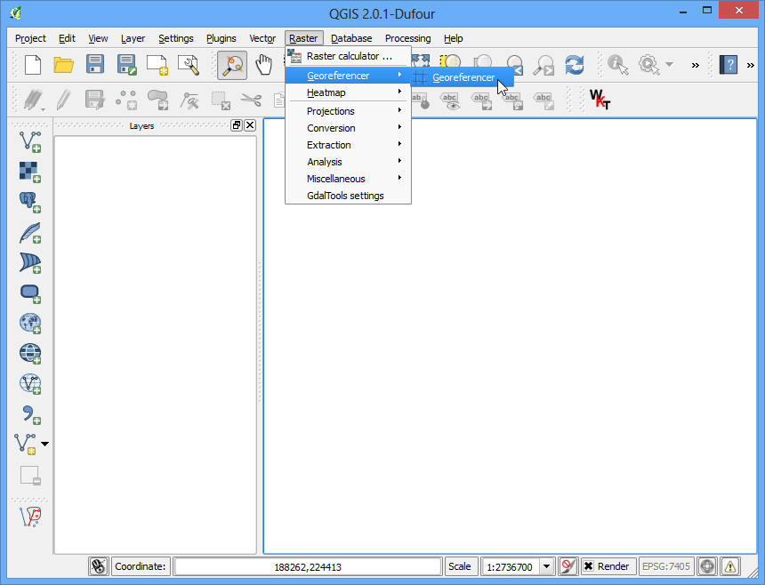
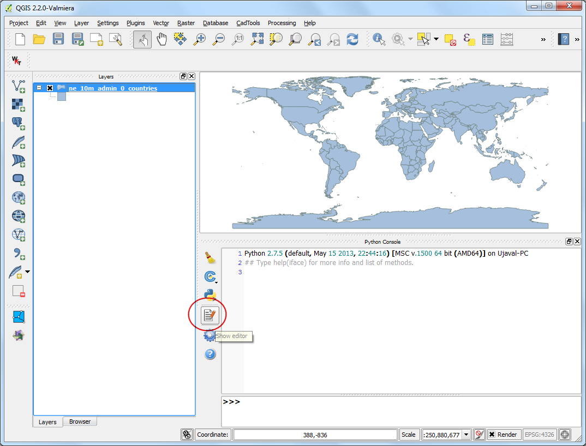
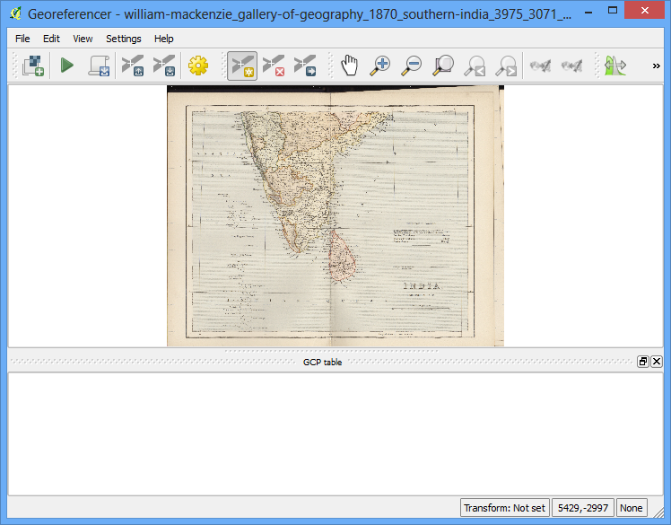

Find Neighbor Polygons in a Layer¶
There are some use cases where you want to find all neighboring polygons of each of the polygons in a layer. With a little python script, we can accomplish this and much more in QGIS. Here is an example script you can use to find all polygons that share boundary with each of the polygons in a layer and also add their names to the attribute table. As an added bonus, the script also sums up an attribute of your choice form all the neighboring polygons.
Overview of the task¶
To demonstrate how the script works, we will use a layer of country polygons and find countries that share the border. We also want to compute the total population of the country’s neighbors.
Get the data¶
We will use the Admin 0 - Countries dataset from Natural Earth.
Download the Admin 0 - countries shapefile..
Data Source [NATURALEARTH]
Get the script¶
Download the neighbors.py script and save it to your disk.
Procedure¶
- Load the ne_10m_admin_0_countries layer by going to Layer ‣ Add Vector Layer.

- The script uses 2 fields to perform the action. A name field and a field that you want to sum up. Use the Identify tool to click on any feature and examine the attributes. In this case the name field is NAME and we want to sum up the population estimates from POP_EST field.

- Go to Plugins ‣ Python Console.

- In the Python Console window, click the Show Editor button.

- In the Editor panel, click the Open file button and browse to downloaded neighbors.py script and click Open.

- Once the script is loaded, you may want to change the _NAME_FIELD and _SUM_FIELD values to match the attributes from your own layer. If you are working with the ne_10m_admin_0_countries layer, you can leave those as they are. Click the Save button in the Editor panel if you made any changes. Now click the Run script button to execute the script.

- Once the script finishes, right-click the ne_10m_admin_0_countries layer and select Open Attribute Table.

- You will notice 2 new attributes called NEIGHBORS and SUM. These were added by the script.

Below is the complete script for reference. You may modify it to suit your needs.
################################################################################
# Copyright 2014 Ujaval Gandhi
#
# Licensed under the Apache License, Version 2.0 (the "License");
# you may not use this file except in compliance with the License.
# You may obtain a copy of the License at
#
# http://www.apache.org/licenses/LICENSE-2.0
#
# Unless required by applicable law or agreed to in writing, software
# distributed under the License is distributed on an "AS IS" BASIS,
# WITHOUT WARRANTIES OR CONDITIONS OF ANY KIND, either express or implied.
# See the License for the specific language governing permissions and
# limitations under the License.
################################################################################
from qgis.utils import iface
from PyQt4.QtCore import QVariant
# Replace the values below with values from your layer.
# For example, if your identifier field is called 'XYZ', then change the line
# below to _NAME_FIELD = 'XYZ'
_NAME_FIELD = 'NAME'
# Replace the value below with the field name that you want to sum up.
# For example, if the # field that you want to sum up is called 'VALUES', then
# change the line below to _SUM_FIELD = 'VALUES'
_SUM_FIELD = 'POP_EST'
# Names of the new fields to be added to the layer
_NEW_NEIGHBORS_FIELD = 'NEIGHBORS'
_NEW_SUM_FIELD = 'SUM'
layer = iface.activeLayer()
# Create 2 new fields in the layer that will hold the list of neighbors and sum
# of the chosen field.
layer.startEditing()
layer.dataProvider().addAttributes(
[QgsField(_NEW_NEIGHBORS_FIELD, QVariant.String),
QgsField(_NEW_SUM_FIELD, QVariant.Int)])
layer.updateFields()
# Create a dictionary of all features
feature_dict = {f.id(): f for f in layer.getFeatures()}
# Build a spatial index
index = QgsSpatialIndex()
for f in feature_dict.values():
index.insertFeature(f)
# Loop through all features and find features that touch each feature
for f in feature_dict.values():
print 'Working on %s' % f[_NAME_FIELD]
geom = f.geometry()
# Find all features that intersect the bounding box of the current feature.
# We use spatial index to find the features intersecting the bounding box
# of the current feature. This will narrow down the features that we need
# to check neighboring features.
intersecting_ids = index.intersects(geom.boundingBox())
# Initalize neighbors list and sum
neighbors = []
neighbors_sum = 0
for intersecting_id in intersecting_ids:
# Look up the feature from the dictionary
intersecting_f = feature_dict[intersecting_id]
# For our purpose we consider a feature as 'neighbor' if it touches or
# intersects a feature. We use the 'disjoint' predicate to satisfy
# these conditions. So if a feature is not disjoint, it is a neighbor.
if (f != intersecting_f and
not intersecting_f.geometry().disjoint(geom)):
neighbors.append(intersecting_f[_NAME_FIELD])
neighbors_sum += intersecting_f[_SUM_FIELD]
f[_NEW_NEIGHBORS_FIELD] = ','.join(neighbors)
f[_NEW_SUM_FIELD] = neighbors_sum
# Update the layer with new attribute values.
layer.updateFeature(f)
layer.commitChanges()
print 'Processing complete.'